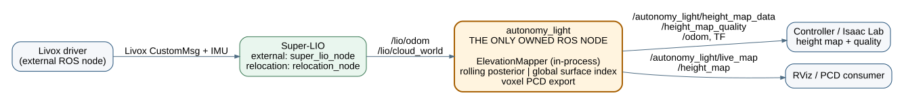

Super-LIO integration and elevation mapping · 2026-08-04

| Node | Owner | Responsibility |
|---|---|---|
| Livox driver | external | Publishes one Livox CustomMsg and IMU stream. |
| Super-LIO | external | LiDAR–IMU odometry with ESKF pose covariance, Scan Context + GICP + iSAM2 full SLAM, saved-map relocation, and continuous map → odom → imu TF. |
rolling_cloud_merge | this package, optional | Synchronizes one D435/D435i PointCloud2 to a LiDAR cloud, transforms it into odom|map, and voxel filters it. |
autonomy_light | this package | Base pose/TF, rolling or global elevation map, quality output, live PCD and PCD save. |
| Direction | Topic | Meaning |
|---|---|---|
| input | /lio/odom | Super-LIO IMU pose and 6×6 ESKF covariance; exactly converted to base_link. |
| input | /lio/cloud_world | Registered cloud in the current global frame. |
| optional input | /camera/.../depth/color/points | One D435/D435i cloud; used only by the merge node. |
| intermediate | /autonomy_light/rolling_cloud | Time-aligned, global-frame LiDAR+D435 cloud for rolling elevation. |
| output | /autonomy_light/height_map_data | Controller distance grid. |
| output | /autonomy_light/height_map_quality | Per-cell validity, variance, age. |
| output | /autonomy_light/live_map | Sparse voxel PCD for RViz and map saving. |
| optional output | height_map | Direct Cyclone DDS core_dds::HeightMap payload for a non-ROS peer. |
TF is map → odom → imu → base_link → base_link_gravity, with static
imu → base_link → lidar_link. Super-LIO publishes identity map → odom
before its first LiDAR update, then owns the correction; this runtime owns the two physical static links.
Normal LIO keeps that correction at identity. A saved map runs Super-LIO relocation_node.
After its NDT→ICP registration succeeds, Super-LIO re-broadcasts map → odom → imu at publish_rate_hz;
the correction is only recalculated at the configured low global-registration rate. Mapping runs the pose graph in
Super-LIO. There is no world frame or duplicate SLAM backend in this package.
/lio/odom is the IMU state. The runtime composes
T_base_imu = T_base_lidar · inverse(T_imu_lidar) from
target_to_lidar_* and imu_from_lidar_*, then applies
T_global_base = T_global_imu · inverse(T_base_imu). Its managed Super-LIO
process receives the same T_imu_lidar calibration.
| Configuration | Algorithm | Use |
|---|---|---|
height_map.source: rolling | Pose-following local Bayesian ground/upper window with measurement variance and outlier gate. | Default for control and sim-to-real. |
height_map.source: global | Persistent, PCD-derived sparse surface index. | Repeatable terrain reference from a saved or accumulated map. |
Both sources use the same output message. valid=0 means the distance value is an
unknown placeholder, not measured flat ground; Isaac Lab should consume the quality channels.
With rolling_merge.enabled: true, the launcher starts the optional merge node.
It accepts only a D435 sample within the configured synchronization window, uses TF at that camera
timestamp, and passes a LiDAR-only cloud through if TF or a matching camera sample is unavailable.
base_link_gravity shares the exact base_link origin and removes only
roll/pitch from its orientation. It is not translated to an estimated floor, so hanging geometry cannot
move the TF. Terrain z is directly base-relative and controller data is base_z - terrain_z.
Each rolling cloud is matched to its timestamped odometry covariance. Sensor range and mounting
calibration are added to the Jacobian-projected pose covariance; XY uncertainty splats the point
across nearby cells. Over-limit uncertainty rejects the cloud. The merge node keeps a
sensor_id and each D435 point's transformed origin, so LiDAR and D435 retain
independent measurement models and exact cleanup-ray sources.
The rolling map's sparse keys are in the global frame only to avoid coordinate resampling.
At every pose the runtime retains exactly the output-sized, yaw-aligned local window and removes
cells outside it. Valid terrain therefore persists inside the local window; age is a
quality diagnostic, not a wall-clock validity timeout.
In rolling mode, per-cloud visibility cleanup casts sensor-to-endpoint rays. A stale surface is cleared only when a ray passes below it after the configured age and aligns with its normal. A distance-ramped exclusion limit removes points above the sensor before fusion, preventing near ceiling and overhang returns from becoming terrain. Static global PCD input is deliberately not ray-cleaned because it has no observation origin or timestamp.
At startup, only the robot footprint receives a flat, high-variance ground prior because its underside is occluded. Its first real observation bypasses the innovation gate and replaces it by the normal Kalman update; the quality variance exposes the prior's low confidence.
base_link → base_link_gravity is present from startup as identity. After odometry
arrives, only its roll/pitch-removing rotation changes; translation stays zero.
The runtime separately schedules heavy cloud fusion and global-PCL publication, so its output timer
refreshes odometry, height-map ROS/DDS messages, and base_link → base_link_gravity at
publish_rate_hz. Static calibration links remain on /tf_static. RViz
/autonomy_light/height_map always contains the entire grid: intensity=1
means valid, while intensity=0 is the unknown placeholder.
./launch.sh --vis starts a live OpenCV 2D view of only the numeric
HeightMap.data grid. It keeps the newest sample only and targets 50 Hz, so the image
follows robot motion instead of rendering a queued stale frame.
height_map_output.transport selects ros2,
cyclone_dds, or both. The direct DDS option uses the installed IDL
core_dds::HeightMap { sequence<float> data; }, configurable domain and topic,
and best-effort keep-last delivery. Its flat, row-major data sequence has exactly the same
values and unknown convention as ROS HeightMap.data; geometry and quality remain
ROS-message metadata. both is the migration/validation mode.
These removals make the state path linear: Super-LIO localizes; one node maps elevation.